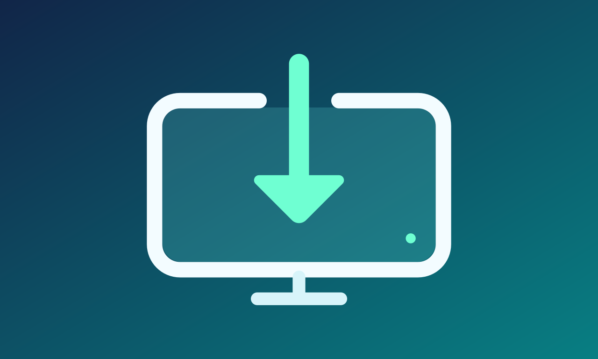

Connect directly
Discover OMT sources with Bonjour or enter the source address. A separate compatible sender is required.
tvOS · Independent · Open source
Receive Open Media Transport video and audio full screen on Apple TV. Choose a network source and let your display do the rest.
Pre-release — App Store preparation is in progress.

Discover OMT sources with Bonjour or enter the source address. A separate compatible sender is required.
8-bit SDR video through 1080p60, automatic interlaced conversion and FPA1 audio. Ethernet is recommended. Sustained 60 fps qualification remains in progress.
Siri Remote controls for source selection, mute, requested quality and reconnect. No account, ads or tracking.
Requires tvOS 17 or later. One source at a time; 4K input, HDR and multiview are not supported. Open Media Transport and associated marks belong to their owners.